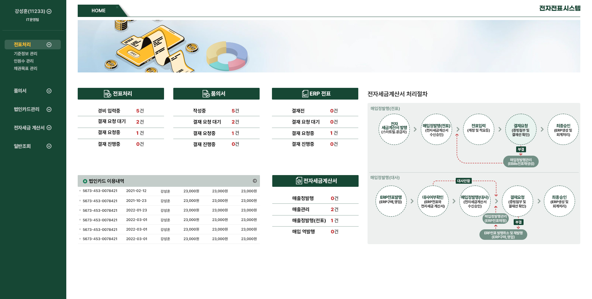
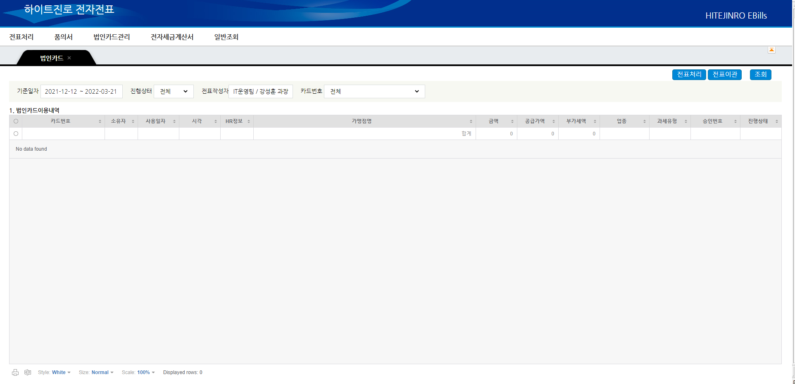
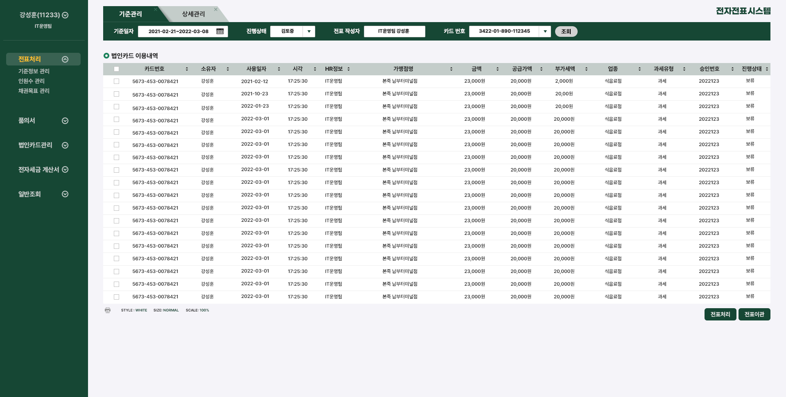
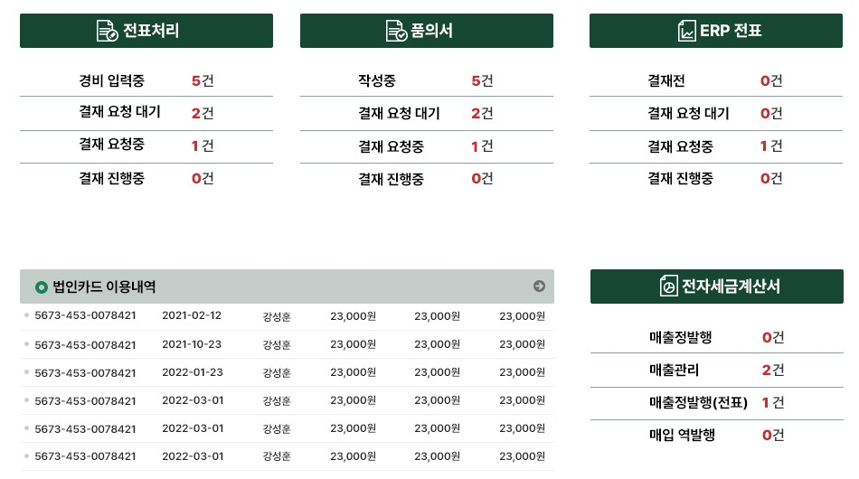
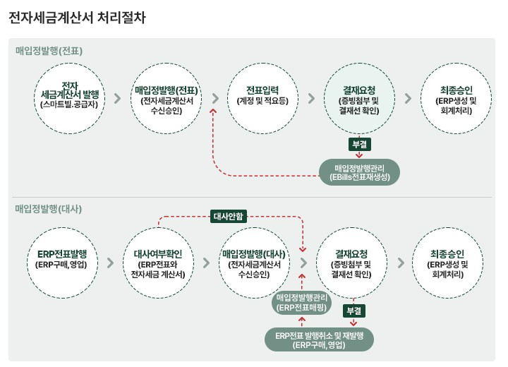
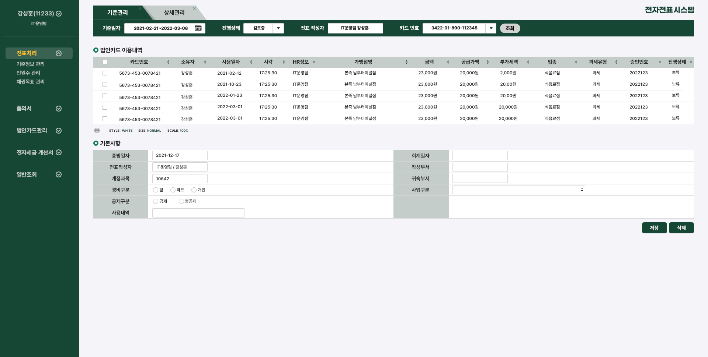
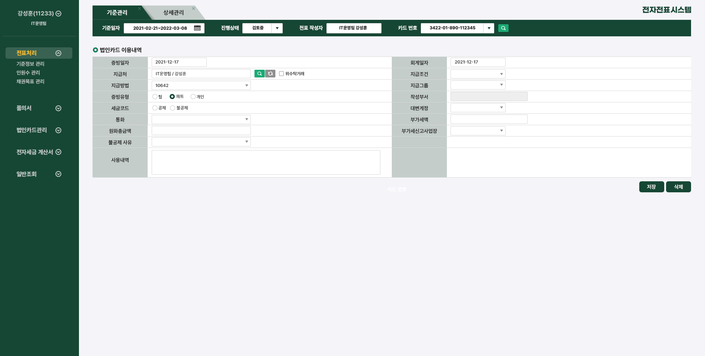
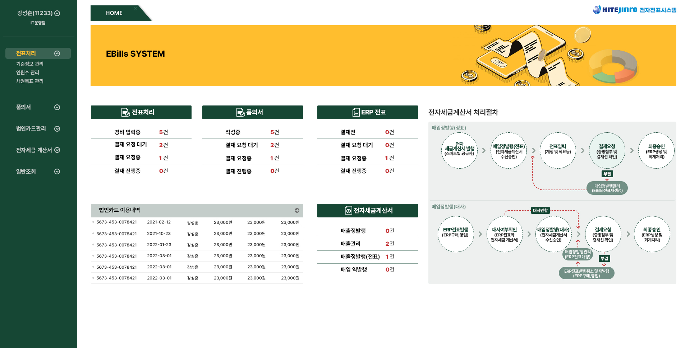

HITE
JINRO
전자전표 통합 시스템(EBills) UI 개편
Enterprise Workflow UI Redesign

흩어진 전표 업무를
하나의 메인과 같은 화면 규칙으로 정리했습니다.
ERP와 연동되는 하이트진로 사내 전자전표 시스템(EBills)의 UI 개편 프로젝트입니다.
전표처리, 품의서, 법인카드, 전자세금계산서 업무를 하나의 시스템에서 처리하는 1920×970 업무 환경을 대상으로,
메인 대시보드와 업무 화면 전반을 다시 설계하고 개발 적용을 위한 화면·오브젝트 가이드를 제작했습니다.
제각각인 화면
화면마다 구성이 다르고, 입력폼이 1행 6컬럼으로 촘촘해 읽고 입력하기 어려움
보이지 않는 현황
처리해야 할 전표와 결재 현황을 보려면 메뉴를 하나씩 들어가야 함
복잡한 처리 단계
단계가 많은 전자세금계산서 업무는 흐름과 예외 경로를 파악하기 어려움
업무 흐름 분석 및 화면 구조 설계 · 메인 대시보드·전표 상태 요약 UI · 전자세금계산서 처리절차 시각화 · 업무 화면 레이아웃 3종 · 화면·오브젝트 가이드
기존 구조를 다듬는 안과
새 구조를 제안하는 안을 함께 검토했습니다.
고객사는 기존 레이아웃을 유지한 개선안과 새로운 구조의 개편안을 함께 보길 원했습니다. Type 1은 기존 레이아웃을 유지하며 색감과 폰트를 정리했고, Type 2는 화면 구조를 새로 잡고 입력폼을 1행 4컬럼으로 바꿔 정보 밀도를 조정했습니다. 고객사는 Type 2를 선택했고, 이후 피드백을 반영해 배너 영역을 줄이고 메뉴를 위로 올려 업무 화면 영역을 넓혔습니다.

Before
상단 메뉴와 조회조건, 목록이 같은 무게로 이어져 어디부터 봐야 할지 알기 어려운 구조

After
좌측 메뉴와 탭으로 위치를 고정하고, 조회조건 배경을 그리드 헤더와 같은 계열로 맞춰 조회와 결과가 하나의 흐름으로 읽히도록 정리
로그인하자마자
처리할 일이 보이도록 메인을 설계했습니다.
업무별 전표 상태를 메인에 모으고, 가장 단계가 많은 전자세금계산서 처리절차를 한 화면에 시각화했습니다.

Status Summary
- 문제
- 보이지 않는 현황 · 결재 현황을 보려면 메뉴를 하나씩 확인해야 함
- 해결
- 전표처리·품의서·ERP 전표·전자세금계산서별로 입력중, 결재 요청 대기, 결재 요청중, 결재 진행중 건수를 요약하고 건수를 강조색으로 표시

Tax Invoice Flow
- 문제
- 복잡한 처리 단계 · 다음 단계와 예외 경로를 파악하기 어려움
- 해결
- 정표·대사 두 흐름으로 나눠 발행부터 최종승인까지 단계별로 표시하고, 부결 시 되돌아가는 경로까지 함께 표시
어떤 메뉴에 들어가도
같은 규칙으로 읽히는 화면을 만들었습니다.
제각각인 화면 문제를 해결하기 위해 업무 화면을 조회형, 조회·입력형, 입력형 세 가지 레이아웃으로 정리했습니다.
List
상단 조회조건과 하단 그리드. 진행상태 컬럼으로 목록에서 바로 상태를 확인하고, 하단에 전표처리·전표이관 액션 배치

List · Form
상단 그리드에서 항목을 선택하면 같은 화면 아래 입력폼에서 기본사항을 바로 입력

Form
입력폼을 1행 6컬럼에서 4컬럼으로 조정하고, 검색·초기화 같은 보조 버튼은 입력 필드 옆에 배치
오래 보는 업무 화면에
브랜드의 그린을 차분하게 담았습니다.
기존 시스템의 딱딱하고 복잡한 분위기를 바꾸기 위해, 하이트진로의 대표 제품인 테라의 브랜드 컬러를 메인 UI에 적용했습니다. 그린 계열은 브랜드 정체성을 담으면서 장시간 업무 화면을 보는 사용자의 시각적 피로를 줄이는 색이고, 화면 전체는 장식을 덜어내고 정보가 먼저 읽히도록 구성했습니다. 메인과 서브 화면 3종의 가이드, 테이블·탭·조회 영역을 정리한 오브젝트 가이드도 함께 제작해 개발팀이 같은 기준으로 구현할 수 있도록 했습니다.

실제 전자전표 시스템에 적용되었습니다.
개편된 화면은 실제 시스템에 적용되었고, 그린 계열의 차분한 화면과 정리된 업무 흐름에 대해 내부 사용자의 만족도가 높았습니다.
전표처리, 품의서, 법인카드, 전자세금계산서로 흩어져 있던 업무를 하나의 메인과 같은 화면 규칙 안에서 처리할 수 있게 된 프로젝트입니다.